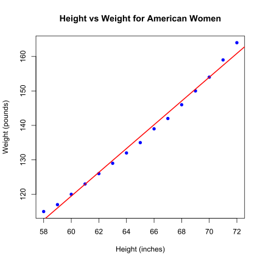
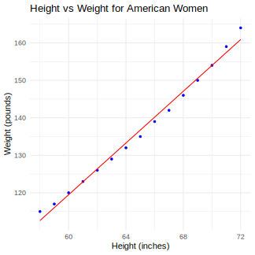
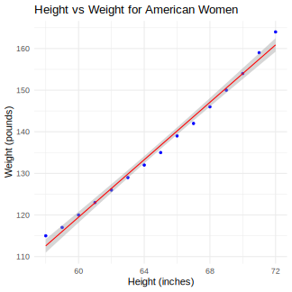

Simple Linear Regression
Purpose
If you want to apply simple linear regression to analyze the relationship between two variables: a predictor variable (x) and a response variable (y), this post is for you.
Visualization
1. Simple visualization
Visualize relationship between Women Height (women$height) and Women Weight (women$weight)
#svg("women_plot.svg", width = 6, height = 6) #set up figure's size
plot(women$height, women$weight,
main = "Height vs Weight for American Women",
xlab = "Height (inches)", # y-axis label
ylab = "Weight (pounds)", # y-axis label
pch = 16, # point size
col = "blue") # color
abline(lm(weight ~ height, data = women), col = "red", lwd = 2) # red regression line
#dev.off() #export
Note: In R, $ means of dataframe. women$height means taking height variable (column) from dataframe women.
Here what you'll get

2. Visualization with ggplot2 library
Visualize relationship between Women Height (women$height) and Women Weight (women$weight)
library(ggplot2)
# Create the plot
p <- ggplot(women, aes(x = height, y = weight)) +
geom_point(color = "blue", size = 1) + # blue points (pch = 16 equivalent)
geom_smooth(method = "lm", color = "red", se = FALSE, linewidth = 1) + # red regression line
labs(title = "Height vs Weight for American Women", # main title
x = "Height (inches)", # x-axis label
y = "Weight (pounds)") + # y-axis label
theme_minimal()
#ggsave("women_plot.svg", plot = p, width = 4.5, height = 4.5, units = "in", device = "svg") # Export as SVG
Here what you'll get

Hypothesis testing
1. Test of signficance
use cor.test() function to test the signicance of hypothesis.
cor.test(women$height, women$weight)
Note: Linear regression assumes a linear relationship between variables. We should verify both that the variables are correlated and that their relationship is indeed linear.
Here are results from the script above:
Pearson's product-moment correlation
data: women$height and women$weight
t = 37.855, df = 13, p-value = 1.091e-14
alternative hypothesis: true correlation is not equal to 0
95 percent confidence interval:
0.9860970 0.9985447
sample estimates:
cor
0.9954948
2. Result Interpretation
cor = 0.9954948=> Correlation coefficient (r) > 0.99 ==> Very high positive correlationp-value = 1.091e-14< 0.05 (commonly used significance level) => Statistically significant correlation95%CI = (0.9861, 0.9985)=> We are 95% confident that the true population correlation coefficient lies between 0.9861 and 0.9985. The grey region represents the confidence interval for the regression line.

In geom_smooth(), set se = TRUE to display the confidence interval for the regression line.
library(ggplot2)
# Create the plot
p <- ggplot(women, aes(x = height, y = weight)) +
geom_point(color = "blue", size = 1) + # blue points (pch = 16 equivalent)
geom_smooth(method = "lm", color = "red", se = TRUE, linewidth = 1) + # red regression line
labs(title = "Height vs Weight for American Women", # main title
x = "Height (inches)", # x-axis label
y = "Weight (pounds)") + # y-axis label
theme_minimal()